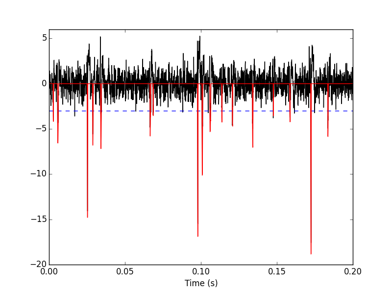
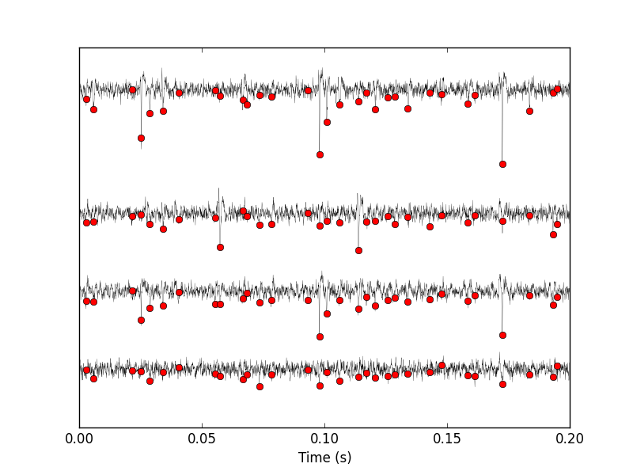
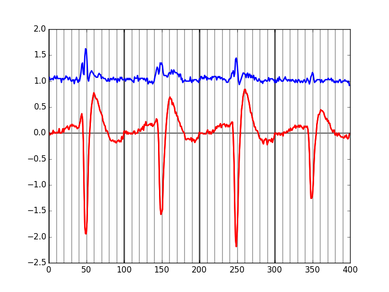
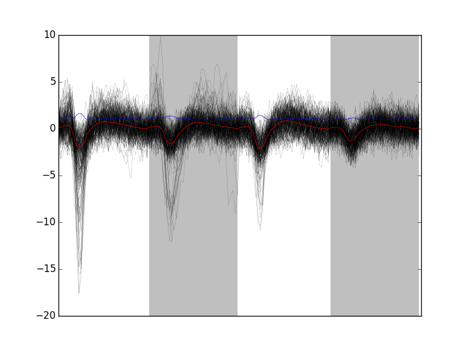
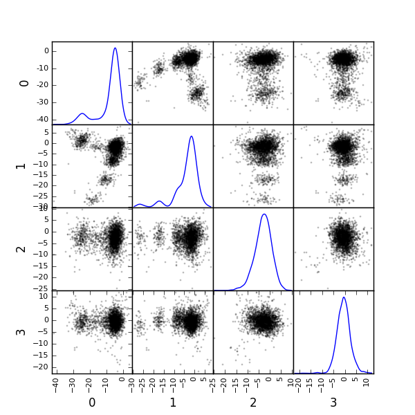
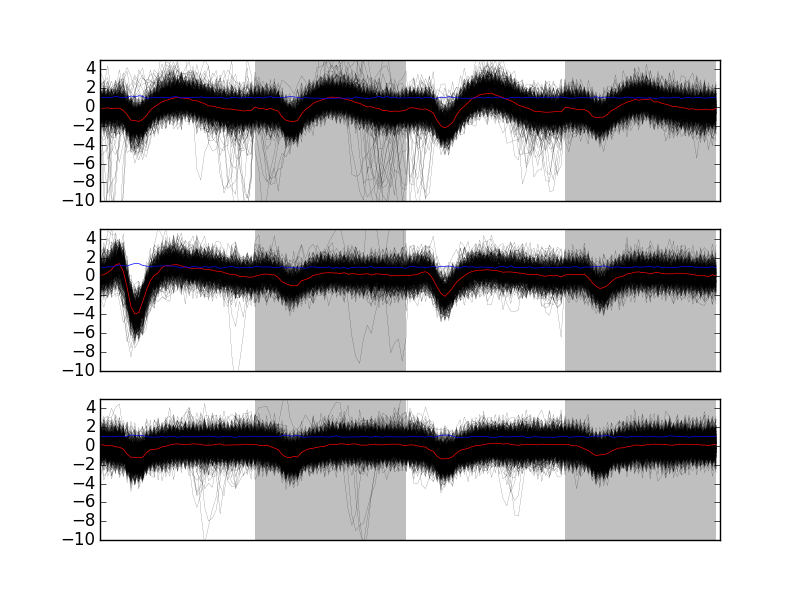
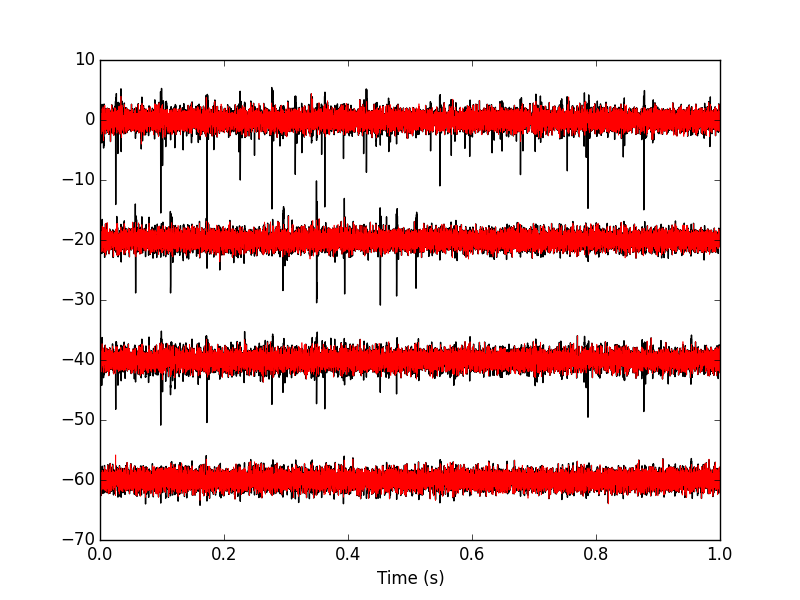
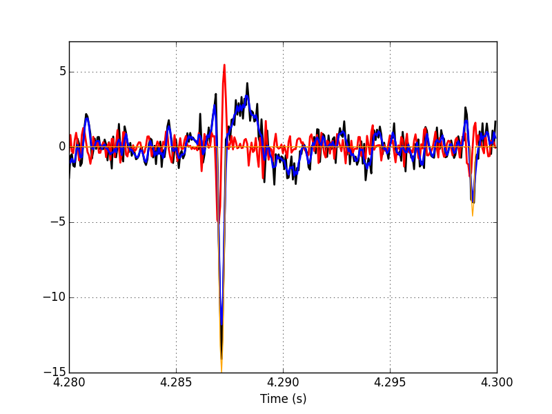

Sorting a Big Data Set With Python
Table of Contents
- 1. Introduction
- 2. Getting the data
- 3. Loading modules and code
- 4. Model / Catalog Estimation
- 5. Defining classes and methods for a systematic analysis of the remaining of the experiment
- 6. Clean up, etc
1 Introduction
The purpose of this document is to expose in a comprehensive way how the spike sorting of a "large" data set can be performed with "simple" tools built around the Python language. The data were recorded from a locust Schistocerca americana antennal lobe (the first olfactory relay, equivalent of the olfactory bulb of vertebrates). A total of 1 hour and 40 minutes of spontaneous activity was recorded as well as responses to 150 stimulation with citral. The set is publicly available on zenodo (DOI: 10.5281/zenodo.21589). The recording setting is described in Pouzat, Mazor and Laurent (2002)1 and a picture of the recording situation can be seen of the third slide of Pouzat (2014)2. The purpose of these long recordings was probing interactions between neurons and how they are modified by a stimulus.
There is no claim that the analysis presented in the sequel is "The" way to analyze these data; it is just one working way. The motivation, as a referee, is to have an explicit example to show to authors who all too often tend to analyze their data en bloc. I'm advocating instead a piecemeal approach were a first stretch of data is initially used to build a model–that is, a catalog of waveform, one per neuron and per recording site–while template matching is applied to the subsequent recorded minutes using a simple trend tracking.
I analyzed these data 14 years ago, meaning that I totally forgot how I did it then. I'm won't look at my old notes and give next a faithful and therefore rather long record of how I go on analyzing this kind of data.
The following analysis was performed with the anaconda distribution of Python 3.
2 Getting the data
The data are stored in HDF5 format on the zenodo server. They are all contained in a file named locust20010201.hdf5. The data within this file have an hierarchical organization similar to the one of a file system (one of the main ideas of the HDF5 format).
The data can be downloaded with Python as follows:
try:
from urllib.request import urlretrieve # Python 3
except ImportError:
from urllib import urlretrieve # Python 2
urlretrieve('https://zenodo.org/record/21589/files/locust20010201.hdf5',\
'locust20010201.hdf5')
Since the data are in HDF5 format, we need to load the h5py module:
import h5py
We then open the file in read mode and we print the content of the LabBook attribute:
hdf = h5py.File('locust20010201.hdf5','r')
print(hdf.attrs['LabBook'])
Animal: young adult female The data come from the second probe penetration in the right antennal lobe. Nice activity on tetrode 9/11/13/16 with response to citral. Continuous_1: 90 acquisitions 29 seconds long with 1 s between end and start. Continuous_2: 20 acquisitions 29 seconds long with 1 s between end and start. 30 MICROMETERS DEEPER TO RECOVER STRONG SIGNAL. Citral_1: 50 stimulations with pure citral (3 s before / 1 s citral / 25 s after) 1 s between end and start. AT THE END FEW DROPS OF SOLUTION AND PROBE MOVED 10 MICROMETERS DEEPER. Citral_2: 50 stimulations with pure citral (10 s before / 1 s citral / 18 s after) 1 s between end and start. Citral_3: 50 stimulations with pure citral (10 s before / 1 s citral / 18 s after) 1 s between end and start. Continuous_3: 50 acquisitions 29 seconds long with 1 s between end and start. Continuous_4: 50 acquisitions 29 seconds long with 1 s between end and start. THE FIRST 45 ACQUISITIONS ARE AVAILABLE THE LAST 5 HAVE BEEN LOST (CD CORRUPTION).
We can get the names of the different groups as follows:
for name in hdf:
print(name)
Citral_1 Citral_2 Citral_3 Continuous_1 Continuous_2 Continuous_3 Continuous_4
We can get the names of the subgroups of group Continuous_1 with (the result is not shown because it's long):
for name in hdf['Continuous_1']:
print(name)
The content of the log_file_content attribute of group Continuous_1 is visualized with (again not shown because it's too long):
print(hdf['Continuous_1'].attrs['log_file_content'])
2.1 Getting the data set for model estimation
We are going to follow the tutorial of Pouzat and Detorakis (2014)3 that can also be followed in HTML version. This means that we have to create a list of 1D arrays where each array contains the data from one recording site; we are going to do that using the first trial (trial_1), that is the first 29 s, of Continuous_1:
ch_names = ['ch09','ch11','ch13','ch16'] data = [hdf['Continuous_1']['trial_01'][name][...] for name in ch_names]
2.2 An import remark on the data
The data are saved in the HDF5 file as they came out of the A/D converter on 16 bit integers. They were band-pass filtered between 300 and 5 kHz and sampled at 15 kHz.
3 Loading modules and code
We are going to use the usual scientific python modules and we set the interactive mode for pyplot:
import numpy as np import matplotlib.pyplot as plt plt.ion() import scipy
We download and then load the sorting specific codes:
urlretrieve('https://github.com/christophe-pouzat/PouzatDetorakisEuroScipy2014/raw/master/sorting_with_python.py',\
'sorting_with_python.py')
import sorting_with_python as swp
4 Model / Catalog Estimation
4.1 Preliminary analysis
We are going to start our analysis by some "sanity checks" to make sure that nothing "weird" happened during the recording.
4.1.1 Five number summary
We should start by getting an overall picture of the data like the one provided by the mquantiles method of module scipy.stats.mstats using it to output a five-number summary. The five numbers are the minimum, the first quartile, the median, the third quartile and the maximum. Since the data were band-pass filtered between 300 and 5kHz and since they were stored "as they came out of the A/D card" we do not expect their median value to be 0.
from scipy.stats.mstats import mquantiles np.set_printoptions(precision=3) np.array([mquantiles(x,prob=[0,0.25,0.5,0.75,1]) for x in data])
| 967 | 2016 | 2057 | 2097 | 2443 |
| 1370 | 2020 | 2057 | 2093 | 2654 |
| 1128 | 2013 | 2059 | 2103 | 2451 |
| 1767 | 2021 | 2057 | 2092 | 2300 |
We see that they have similar but not identical inter quartile ranges: 81, 73, 90, 71 as well as similar (for the first three) but not identical domain "lengths":
[np.ptp(x) for x in data]
| 1476 | 1284 | 1323 | 533 |
On the fourth channel, the relatively small difference between the inter quartile range (71) and the domain length (533) suggests that much fewer large spikes should be visible than on the other channels.
4.1.2 Were the data normalized?
We can check next if some processing like a division by the standard deviation (SD) has been applied:
[np.std(x) for x in data]
[67.715955603137786, 63.569600931328665, 72.067491426766736, 53.294373692202477]
So no SD normalization was applied to these data.
4.1.3 Discretization step amplitude
We can easily obtain the size of the digitization set:
[np.min(np.diff(np.sort(np.unique(x)))) for x in data]
[1, 1, 1, 1]
As expected since the data are directly in the format generated by the A/D card.
4.2 Plot the data
Plotting the data for interactive exploration is trivial. The only trick is to add (or subtract) a proper offest (that we get here using the maximal value of each channel from our five-number summary), this is automatically implemented in our plot_data_list function:
data_len = len(data[0]) tt = np.arange(0,data_len)/1.5e4 swp.plot_data_list(data,tt,0.1) plt.xlim([0,29])
The first channel is drawn as is, the second is offset downward by the sum of its maximal value and of the absolute value of the minimal value of the first, etc. We then get something like Fig. \ref{fig:WholeRawData}.
Figure 1: The whole (29 s) Locust antennal lobe data set.
As already discussed, the spikes on the fourth channel (bottom trace) are really tiny. It is also good to "zoom in" and look at the data with a finer time scale (Fig. \ref{fig:First200ms}) with:
plt.xlim([0,0.2])
Figure 2: First 200 ms of the Locust data set.
We can also zoom directly in an interactive way from the first plot. Doing that, we see that there are no "big" events on data[3] that we cannot see on at least one of the other channels.
4.3 Data renormalization
We are going to use a median absolute deviation (MAD) based renormalization. The goal of the procedure is to scale the raw data such that the noise SD is approximately 1. Since it is not straightforward to obtain a noise SD on data where both signal (i.e., spikes) and noise are present, we use this robust type of statistic for the SD:
data_mad = list(map(swp.mad,data)) data_mad
[59.303999999999995, 54.856199999999994, 66.716999999999999, 53.373599999999996]
And we normalize accordingly (we also subtract the median which is not 0):
data_median = list(map(np.median,data)) data_median
[2057.0, 2057.0, 2059.0, 2057.0]
data = list(map(lambda x: (x-np.median(x))/swp.mad(x), data))
4.4 Detect valleys
We are going to filter the data slightly using a "box" filter of length 5. That is, the data points of the original trace are going to be replaced by the average of themselves with their four nearest neighbors. We will then scale the filtered traces such that the MAD is one on each recording sites and keep only the parts of the signal which bellow -3 (I started with -4 but after doing the interactive detection check as described bellow, I decided to reduce the absolute value of the threshold):
from scipy.signal import fftconvolve
from numpy import apply_along_axis as apply
data_filtered = apply(lambda x:
fftconvolve(x,np.array([1,1,1,1,1])/5.,'same'),
1,np.array(data))
data_filtered -= np.median(data_filtered,axis=1).reshape(len(data),1)
data_filtered = (data_filtered.transpose() / \
apply(swp.mad,1,data_filtered)).transpose()
data_filtered[data_filtered > -3] = 0
We can see the difference between the raw trace and the filtered and rectified one (Fig. \ref{fig:compare-raw-and-filtered-data}) on which spikes are going to be detected with:
plt.plot(tt, data[0],color='black')
plt.axhline(y=-3,color="blue",linestyle="dashed")
plt.plot(tt, data_filtered[0,],color='red')
plt.xlim([0,0.2])
plt.ylim([-20,6])
plt.xlabel('Time (s)')

Figure 3: First 200 ms on site 1 of data set data. The raw data are shown in black, the detection threshold appears in dashed blue and the filtered and rectified trace on which spike detection is going to be preformed appears in red.
We now use function peak on the sum of the rows of our filtered and rectified version of the data:
sp0 = swp.peak(-data_filtered.sum(0))
Giving 2325 spikes, a mean inter-event interval of 186.0 sampling points, a standard deviation of 187.0 sampling points, a smallest inter-event interval of 16 sampling points and a largest of 2145 sampling points.
4.4.1 Interactive spike detection check
We can then check the detection quality with:
swp.plot_data_list_and_detection(data,tt,sp0) plt.xlim([0,0.2])

Figure 4: First 200 ms of data set data (black) with detected spikes (red).
4.5 Cuts
After detecting our spikes, we must make our cuts in order to create our events' sample. The obvious question we must first address is: How long should our cuts be? The pragmatic way to get an answer is:
- Make cuts much longer than what we think is necessary, like 50 sampling points on both sides of the detected event's time.
- Compute robust estimates of the "central" event (with the
median) and of the dispersion of the sample around this central event (with theMAD). - Plot the two together and check when does the
MADtrace reach the background noise level (at 1 since we have normalized the data). - Having the central event allows us to see if it outlasts significantly the region where the
MADis above the background noise level.
Clearly cutting beyond the time at which the MAD hits back the noise level should not bring any useful information as far a classifying the spikes is concerned. So here we perform this task as follows:
evts = swp.mk_events(sp0,np.array(data),49,50) evts_median=apply(np.median,0,evts) evts_mad=apply(swp.mad,0,evts)
plt.plot(evts_median, color='red', lw=2)
plt.axhline(y=0, color='black')
for i in np.arange(0,400,100):
plt.axvline(x=i, color='black', lw=2)
for i in np.arange(0,400,10):
plt.axvline(x=i, color='grey')
plt.plot(evts_median, color='red', lw=2)
plt.plot(evts_mad, color='blue', lw=2)

Figure 5: Robust estimates of the central event (red) and of the sample's dispersion around the central event (blue) obtained with "long" (100 sampling points) cuts. We see clearly that the dispersion is back to noise level 10 points before the peak and 30 points after the peak. We also see that data[3] brings very little information (its MAD is essentially flat).
Fig. \ref{fig:check-MAD-on-long-cuts} clearly shows that starting the cuts 10 points before the peak and ending them 30 points after should fulfill our goals. We also see that the central event slightly outlasts the window where the MAD is larger than 1 and that data[3] brings very little information.
4.5.1 Events
Once we are satisfied with our spike detection, at least in a provisory way, and that we have decided on the length of our cuts, we proceed by making cuts around the detected events. :
evts = swp.mk_events(sp0,np.array(data),9,30)
We can visualize the first 200 events with:
swp.plot_events(evts,200)

Figure 6: First 200 events of evts. Cuts from the four recording sites appear one after the other. The background (white / grey) changes with the site. In red, robust estimate of the "central" event obtained by computing the pointwise median. In blue, robust estimate of the scale (SD) obtained by computing the pointwise MAD.
4.5.2 Noise
Getting an estimate of the noise statistical properties is an essential ingredient to build respectable goodness of fit tests. In our approach "noise events" are essentially anything that is not an "event" is the sense of the previous section. I wrote essentially and not exactly since there is a little twist here which is the minimal distance we are willing to accept between the reference time of a noise event and the reference time of the last preceding and of the first following "event". We could think that keeping a cut length on each side would be enough. That would indeed be the case if all events were starting from and returning to zero within a cut. But this is not the case with the cuts parameters we chose previously (that will become clear soon). You might wonder why we chose so short a cut length then. Simply to avoid having to deal with too many superposed events which are the really bothering events for anyone wanting to do proper sorting.
To obtain our noise events we are going to use function mk_noise which takes the same arguments as function mk_events plus two numbers:
safety_factora number by which the cut length is multiplied and which sets the minimal distance between the reference times discussed in the previous paragraph.sizethe maximal number of noise events one wants to cut (the actual number obtained might be smaller depending on the data length, the cut length, the safety factor and the number of events).
We cut noise events with a rather large safety factor:
noise = swp.mk_noise(sp0,np.array(data),10,30,safety_factor=2.5,size=2000)
Calling (result not shown):
swp.plot_events(noise,200)
shows that our "safety factor" was large enough.
4.5.3 Getting "clean" events
Our spike sorting has two main stages, the first one consist in estimating a model and the second one consists in using this model to classify the data. Our model is going to be built out of reasonably "clean" events. Here by clean we mean events which are not due to a nearly simultaneous firing of two or more neurons; and simultaneity is defined on the time scale of one of our cuts. When the model will be subsequently used to classify data, events are going to decomposed into their (putative) constituent when they are not "clean", that is, superposition are going to be looked and accounted for.
In order to eliminate the most obvious superpositions we are going to use a rather brute force approach, looking at the sides of the central peak of our median event and checking if individual events are not too large there, that is do not exhibit extra peaks. We first define a function doing this job:
def good_evts_fct(samp, thr=3):
samp_med = apply(np.median,0,samp)
samp_mad = apply(swp.mad,0,samp)
above = samp_med > 0
samp_r = samp.copy()
for i in range(samp.shape[0]): samp_r[i,above] = 0
samp_med[above] = 0
res = apply(lambda x:
np.all(abs((x-samp_med)/samp_mad) < thr),
1,samp_r)
return res
We then apply our new function to our sample using a threshold of 9 (after a try with 8):
goodEvts = good_evts_fct(evts,9)
Out of 2325 events we get 2314 "good" ones. As usual, the first 200 good ones can be visualized with:
swp.plot_events(evts[goodEvts,:][:200,:])
while the bad guys can be visualized with:
swp.plot_events(evts[goodEvts.__neg__(),:],
show_median=False,
show_mad=False)
We see that these events are not superpositions and we will work with the whole sample.
4.6 Dimension reduction
4.6.1 Principal Component Analysis (PCA)
Our events are living right now in an 160 dimensional space (our cuts are 40 sampling points long and we are working with 4 recording sites simultaneously). It turns out that it hard for most humans to perceive structures in such spaces. It also hard, not to say impossible with a realistic sample size, to estimate probability densities (which is what model based clustering algorithms are actually doing) in such spaces, unless one is ready to make strong assumptions about these densities. It is therefore usually a good practice to try to reduce the dimension of the sample space used to represent the data. We are going to that with principal component analysis (PCA), using it on our "good" events.
from numpy.linalg import svd varcovmat = np.cov(evts.T) u, s, v = svd(varcovmat)
With this "back to the roots" approach, u should be an orthonormal matrix whose column are made of the principal components (and v should be the transpose of u since our matrix varcovmat is symmetric and real by construction). s is a vector containing the amount of sample variance explained by each principal component.
4.6.2 Exploring PCA results
PCA is a rather abstract procedure to most of its users, at least when they start using it. But one way to grasp what it does is to plot the mean event plus or minus, say five times, each principal components like:
evt_idx = range(160)
evts_good_mean = np.mean(evts,0)
for i in range(4):
plt.subplot(2,2,i+1)
plt.plot(evt_idx,evts_good_mean, 'black',evt_idx,
evts_good_mean + 5 * u[:,i],
'red',evt_idx,evts_good_mean - 5 * u[:,i], 'blue')
plt.title('PC' + str(i) + ': ' + str(round(s[i]/sum(s)*100)) +'%')

Figure 7: PCA of evts exploration (PC 1 to 4). Each of the 4 graphs shows the mean waveform (black), the mean waveform + 5 x PC (red), the mean - 5 x PC (blue) for each of the first 4 PCs. The fraction of the total variance "explained" by the component appears in the title of each graph.
We now look at the next 4 principal components:
for i in range(4,8):
plt.subplot(2,2,i-3)
plt.plot(evt_idx,evts_good_mean, 'black',
evt_idx,evts_good_mean + 5 * u[:,i], 'red',
evt_idx,evts_good_mean - 5 * u[:,i], 'blue')
plt.title('PC' + str(i) + ': ' + str(round(s[i]/sum(s)*100)) +'%')

Figure 8: PCA of evts exploration (PC 4 to 7). Each of the 4 graphs shows the mean waveform (black), the mean waveform + 5 x PC (red), the mean - 5 x PC (blue). The fraction of the total variance "explained" by the component appears in between parenthesis in the title of each graph.
4.6.3 Static representation of the projected data
We can build a scatter plot matrix showing the projections of our "good" events sample onto the plane defined by pairs of the few first PCs:
evts_good_P0_to_P3 = np.dot(evts,u[:,0:4])
from pandas.tools.plotting import scatter_matrix
import pandas as pd
df = pd.DataFrame(evts_good_P0_to_P3)
scatter_matrix(df,alpha=0.2,s=4,c='k',figsize=(6,6),
diagonal='kde',marker=".")

4.6.4 Dynamic visualization of the data with GGobi
The best way to discern structures in "high dimensional" data is to dynamically visualize them. To this end, the tool of choice is GGobi, an open source software available on Linux, Windows and MacOS. We start by exporting our data in csv format to our disk:
import csv
g = open('evts.csv','w')
w = csv.writer(g)
w.writerows(np.dot(evts,u[:,:6]))
g.close()
The following terse procedure should allow the reader to get going with GGobi:
- Launch
GGobi - In menu:
File->Open, selectevtsE.csv. - Since the glyphs are rather large, start by changing them for smaller ones:
- Go to menu:
Interaction->Brush. - On the Brush panel which appeared check the
Persistentbox. - Click on
Choose color & glyph.... - On the chooser which pops out, click on the small dot on the upper left of the left panel.
- Go back to the window with the data points.
- Right click on the lower right corner of the rectangle which appeared on the figure after you selected
Brush. - Dragg the rectangle corner in order to cover the whole set of points.
- Go back to the
Interactionmenu and select the first row to go back where you were at the start.
- Go to menu:
- Select menu:
View->Rotation. - Adjust the speed of the rotation in order to see things properly.
We easily discern 7 rather well separated clusters. Meaning that an automatic clustering with 7 clusters on the first 3 or 4 principal components should do the job.
4.7 Clustering with K-Means
Since our dynamic visualization shows 7 well separated clusters in 3 dimensions, a simple k-means is worth trying (even if some clusters look a bit "elongated"). We are using here the KMeans class of scikit-learn:
from sklearn.cluster import KMeans km7 = KMeans(n_clusters=7, init='k-means++', n_init=100, max_iter=100) km7.fit(np.dot(evts,u[:,0:3])) c7 = km7.fit_predict(np.dot(evts,u[:,0:3]))
In order to facilitate comparison when models with different numbers of clusters or when different models are used, clusters are sorted by "size". The size is defined here as the sum of the absolute value of the median of the cluster (an L1 norm):
cluster_median = list([(i,
np.apply_along_axis(np.median,0,
evts[c7 == i,:]))
for i in range(7)
if sum(c7 == i) > 0])
cluster_size = list([np.sum(np.abs(x[1])) for x in cluster_median])
new_order = list(reversed(np.argsort(cluster_size)))
new_order_reverse = sorted(range(len(new_order)), key=new_order.__getitem__)
c7b = [new_order_reverse[i] for i in c7]
4.7.1 Cluster specific plots
Looking at the first 4 clusters we get Fig. \ref{fig:events-clusters0to3} with:
plt.subplot(411) swp.plot_events(evts[np.array(c7b) == 0,:]) plt.ylim([-20,15]) plt.subplot(412) swp.plot_events(evts[np.array(c7b) == 1,:]) plt.ylim([-20,15]) plt.subplot(413) swp.plot_events(evts[np.array(c7b) == 2,:]) plt.ylim([-20,15]) plt.subplot(414) swp.plot_events(evts[np.array(c7b) == 3,:]) plt.ylim([-20,15])
Figure 10: First 4 clusters. Cluster 0 at the top, cluster 4 at the bottom. Red, cluster specific central / median event. Blue, cluster specific MAD.
Here the second cluster seems to be made of two units. Looking at the last 3 clusters we get Fig. \ref{fig:events-clusters5to9} with:
plt.subplot(311) swp.plot_events(evts[np.array(c7b) == 4,:]) plt.ylim([-10,5]) plt.subplot(312) swp.plot_events(evts[np.array(c7b) == 5,:]) plt.ylim([-10,5]) plt.subplot(313) swp.plot_events(evts[np.array(c7b) == 6,:]) plt.ylim([-10,5])

Figure 11: Last 3 clusters. Cluster 4 at the top, cluster 6 at the bottom. Red, cluster specific central / median event. Blue, cluster specific MAD. Notice the change in ordinate scale compared to the previous figure.
The top (cluster 4) and bottom (cluster 6) clusters look similar.
4.7.2 Results inspection with GGobi
We start by checking our clustering quality with GGobi. To this end we export the data and the labels of each event:
g = open('evts_sorted.csv','w')
w = csv.writer(g)
w.writerows(np.concatenate((np.dot(evts,u[:,:6]),
np.array([c7b]).T),
axis=1))
g.close()
An again succinct description of how to do the dynamical visual check is:
- Load the new data into GGobi like before.
- In menu:
Display->New Scatterplot Display, selectevtsEsorted.csv. - Change the glyphs like before.
- In menu:
Tools->Color Schemes, select a scheme with 10 colors, likeSpectral,Spectral 10. - In menu:
Tools->Automatic Brushing, selectevtsEsorted.csvtab and, within this tab, select variablec10b. Then click onApply. - Select
View->Rotationlike before and see your result.
We see on this dynamic display that clusters 4 and 6 do form a continuum.
4.7.3 Preliminary conclusion
At this stage it seems reasonable to split cluster 1 in two and to fuse clusters 4 and 6.
4.7.4 Splitting cluster 1 in two
km2 = KMeans(n_clusters=2, init='k-means++', n_init=100, max_iter=100)
km2.fit(np.dot(evts[np.array(c7b) == 1,:],u[:,0:3]))
c2 = km2.fit_predict(np.dot(evts[np.array(c7b) == 1,:],u[:,0:3]))
cluster_median2 = list([(i,
np.apply_along_axis(np.median,0,
evts[np.array(c7b) == 1,:][c2 == i,:]))
for i in range(2)
if sum(c2 == i) > 0])
cluster_size2 = list([np.sum(np.abs(x[1])) for x in cluster_median2])
new_order2 = list(reversed(np.argsort(cluster_size2)))
new_order_reverse2 = sorted(range(len(new_order2)), key=new_order2.__getitem__)
c2b = [new_order_reverse2[i] for i in c2]
A look at the results:
plt.subplot(211) swp.plot_events(evts[np.array(c7b) == 1,:][np.array(c2b) == 0,:]) plt.ylim([-20,15]) plt.subplot(212) swp.plot_events(evts[np.array(c7b) == 1,:][np.array(c2b) == 1,:]) plt.ylim([-20,15])
Figure 12: The results of splitting cluster 1 in two clusters with kmeans.
This is not what was wanted, the events with an early large positive values on the second site are still mixed. Let's try with a gaussian mixture:
from sklearn import mixture
g2 = mixture.GMM(n_components=2,covariance_type='full',n_init=10)
g2.fit(np.dot(evts[np.array(c7b) == 1,:],u[:,0:3]))
cB = g2.predict(np.dot(evts[np.array(c7b) == 1,:],u[:,0:3]))
cluster_medianB = list([(i,
np.apply_along_axis(np.median,0,
evts[np.array(c7b) == 1,:][cB == i,:]))
for i in range(2)
if sum(cB == i) > 0])
cluster_sizeB = list([np.sum(np.abs(x[1])) for x in cluster_medianB])
new_orderB = list(reversed(np.argsort(cluster_sizeB)))
new_order_reverseB = sorted(range(len(new_orderB)), key=new_orderB.__getitem__)
cBb = [new_order_reverseB[i] for i in cB]
A look at the results:
plt.subplot(211) swp.plot_events(evts[np.array(c7b) == 1,:][np.array(cBb) == 0,:]) plt.ylim([-20,15]) plt.subplot(212) swp.plot_events(evts[np.array(c7b) == 1,:][np.array(cBb) == 1,:]) plt.ylim([-20,15])
Figure 13: The results of splitting cluster 1 in two clusters with a GMM.
This does what we wanted. That also suggests that redoing our initial clustering with a GMM is worth trying (and it was tried, not shown, but did not work out better).
4.7.5 Construction of a labeling with 8 units
We will go further from this point by splitting the second cluster in two as we just did. The eighth cluster is going to be the less numerous of the two we just obtained.
c8 = c7b.copy()
B_idx = 0
for idx in range(len(c8)):
if c8[idx] == 1:
if cBb[B_idx] == 0:
c8[idx] = 7
B_idx += 1
4.8 Spike "peeling": a "Brute force" superposition resolution
We are going to resolve (the most "obvious") superpositions by a "recursive peeling method":
- Events are detected and cut from the raw data or from an already peeled version of the data.
- The closest center (in term of Euclidean distance) to the event is found.
- If the residual sum of squares (
RSS), that is: (actual data - best center)\(^2\), is smaller than the squared norm of a cut, the best center is subtracted from the data on which detection was performed—jitter is again compensated for at this stage. - Go back to step 1 or stop.
To apply this procedure, we need, for each cluster, estimates of its center and of its first two derivatives. Function mk_center_dictionary does the job for us. We must moreover build our clusters' centers such that they can be used for subtraction, this implies that we should make them long enough, on both side of the peak, to see them go back to baseline. Formal parameters before and after bellow should therefore be set to larger values than the ones used for clustering:
centers = { "Cluster " + str(i) :
swp.mk_center_dictionary(sp0[np.array(c8)==i],
np.array(data))
for i in range(8)}
4.8.1 First peeling
Function classify_and_align_evt is used next. For each detected event, it matches the closest template, correcting for the jitter, if the closest template is close enough:
swp.classify_and_align_evt(sp0[0],np.array(data),centers)
['Cluster 4', 41, -0.76918445702167082]
We can use the function on every detected event. A trick here is to store the matrix version of the data in order to avoid the conversion of the list of vectors (making the data of the different channels) into a matrix for each detected event:
data0 = np.array(data)
round0 = [swp.classify_and_align_evt(sp0[i],data0,centers)
for i in range(len(sp0))]
We can check how many events got unclassified on a total of 2325:
len([x[1] for x in round0 if x[0] == '?'])
56
Using function predict_data, we create an ideal data trace given events' positions, events' origins and a clusters' catalog:
pred0 = swp.predict_data(round0,centers,data0.shape[0],data0.shape[1])
data1 = data0 - pred0
We can compare the original data with the result of the "first peeling" to get Fig. \ref{fig:FirstPeeling}:
plt.plot(tt, data0[0,], color='black')
plt.plot(tt, data1[0,], color='red',lw=0.7)
plt.plot(tt, data0[1,]-20, color='black')
plt.plot(tt, data1[1,]-20, color='red',lw=0.7)
plt.plot(tt, data0[2,]-40, color='black')
plt.plot(tt, data1[2,]-40, color='red',lw=0.7)
plt.plot(tt, data0[3,]-60, color='black')
plt.plot(tt, data1[3,]-60, color='red',lw=0.7)
plt.xlabel('Time (s)')
plt.xlim([2.45,2.55])
Figure 14: 100 ms of data. Black, original data; red, after first peeling.
4.8.2 Second peeling
We then take data1 as our former data0 and we repeat the procedure. We do it with slight modifications: detection is done on a single recording site and a shorter filter length is used before detecting the events. Doing detection on a single site (here site 0) allows us to correct some drawbacks of our crude spike detection method. When we used it the first time we summed the filtered and rectified versions of the data before looking at peaks. This summation can lead to badly defined spike times when two neurons that are large on different recording sites, say site 0 and site 1 fire at nearly the same time. The summed event can then have a peak in between the two true peaks and our jitter correction cannot resolve that. We are therefore going to perform detection on the different sites. The jitter estimation and the subtraction are always going to be done on the 4 recording sites:
data_filtered = np.apply_along_axis(lambda x:
fftconvolve(x,np.array([1,1,1])/3.,
'same'),
1,data1)
data_filtered = (data_filtered.transpose() /
np.apply_along_axis(swp.mad,1,
data_filtered)).transpose()
data_filtered[data_filtered > -3] = 0
sp1 = swp.peak(-data_filtered[0,:])
We classify the events and obtain the new prediction and the new "data":
round1 = [swp.classify_and_align_evt(sp1[i],data1,centers)
for i in range(len(sp1))]
pred1 = swp.predict_data(round1,centers,data1.shape[0],data1.shape[1])
data2 = data1 - pred1
We can check how many events got unclassified on a total of 581:
len([x[1] for x in round1 if x[0] == '?'])
126
We can compare the first peeling with the second one (Fig. \ref{fig:SecondPeeling}):
plt.plot(tt, data1[0,], color='black')
plt.plot(tt, data2[0,], color='red',lw=0.7)
plt.plot(tt, data1[1,]-20, color='black')
plt.plot(tt, data2[1,]-20, color='red',lw=0.7)
plt.plot(tt, data1[2,]-40, color='black')
plt.plot(tt, data2[2,]-40, color='red',lw=0.7)
plt.plot(tt, data1[3,]-60, color='black')
plt.plot(tt, data2[3,]-60, color='red',lw=0.7)
plt.xlabel('Time (s)')
plt.xlim([2.45,2.55])
Figure 15: 100 ms of data. Black, first peeling; red, second peeling.
4.8.3 Third peeling
We take data2 as our former data1 and we repeat the procedure detecting on channel 1, but we want to do it in a more compact form and we write a dedicated function to do so:
def peel(input_data,
chan4detection,
detection_filter_length = 3,
detection_threshold = -3,
centers_dictionary = centers):
"""Detects events, sorts them and get residuals
Parameters
----------
input_data: a data matrix.
chan4detection: the channel(s) to use for detection. An integer if a single
channel is o be used for detection or a list of integers if
if several channels are to be used.
detection_filter_length: an odd integer the length of the box filter to use
for detection.
detection_threshold: the detection threshold (multiple of the MAD); if positive,
peaks are detected, if negative, valleys are detected.
centers_dictionary: a dictionary of centers (see function mk_center_dictionary).
Returns
-------
A tuple with two elements: a list with the results of classify_and_align_evt
applied to each detected event.
a matrix with the new residuals.
Details
-------
The function prints out the number of detected events as well as the number of
spikes attributed to each unit of the dictionary and the number of unclassified
events while running.
"""
nb_channels, recording_length = input_data.shape
data_filtered = apply(lambda x:
fftconvolve(x,np.ones(detection_filter_length)/float(detection_filter_length),'same'),
1,input_data)
data_filtered = (data_filtered.transpose() / \
apply(swp.mad,1,data_filtered)).transpose()
if detection_threshold < 0:
data_filtered[data_filtered > detection_threshold] = 0
if isinstance(chan4detection,int):
spike_pos = swp.peak(-data_filtered[chan4detection,:])
else:
spike_pos = swp.peak(-data_filtered[chan4detection,:].sum(0))
else:
data_filtered[data_filtered < detection_threshold] = 0
if isinstance(chan4detection,int):
spike_pos = swp.peak(data_filtered[chan4detection,:])
else:
spike_pos = swp.peak(data_filtered[chan4detection,:].sum(0))
nb_spikes = len(spike_pos)
print("Number of detected events: "+str(nb_spikes))
classification = [swp.classify_and_align_evt(spike_pos[i],input_data,centers_dictionary) for i in range(nb_spikes)]
for i in range(len(centers_dictionary)):
nb_spikes_from_unit = len([x[1] for x in classification if x[0] == 'Cluster '+ str(i)])
print(" Number of spikes from unit "+str(i)+": "+str(nb_spikes_from_unit))
nb_unclassified = len([x[1] for x in classification if x[0] == '?'])
print(" Number of unclassified events: " + str(nb_unclassified))
pred = swp.predict_data(classification,centers_dictionary,nb_channels,recording_length)
return classification, input_data - pred
round2, data3 = peel(data2,1,3,-3,centers)
Number of detected events: 452
Number of spikes from unit 0: 0
Number of spikes from unit 1: 7
Number of spikes from unit 2: 0
Number of spikes from unit 3: 1
Number of spikes from unit 4: 96
Number of spikes from unit 5: 0
Number of spikes from unit 6: 270
Number of spikes from unit 7: 2
Number of unclassified events: 76
We can compare the second peeling with the third one (Fig. \ref{fig:ThirdPeeling}):
plt.plot(tt, data2[0,], color='black')
plt.plot(tt, data3[0,], color='red',lw=0.7)
plt.plot(tt, data2[1,]-20, color='black')
plt.plot(tt, data3[1,]-20, color='red',lw=0.7)
plt.plot(tt, data2[2,]-40, color='black')
plt.plot(tt, data3[2,]-40, color='red',lw=0.7)
plt.plot(tt, data2[3,]-60, color='black')
plt.plot(tt, data3[3,]-60, color='red',lw=0.7)
plt.xlabel('Time (s)')
plt.xlim([16.15,16.25])
Figure 16: 100 ms of data. Black, second peeling; red, third peeling.
4.8.4 Fourth peeling
We take data3 as our former data2 and we repeat the procedure detecting on channel 2:
round3, data4 = peel(data3,2,3,-3,centers)
Number of detected events: 556
Number of spikes from unit 0: 0
Number of spikes from unit 1: 0
Number of spikes from unit 2: 0
Number of spikes from unit 3: 1
Number of spikes from unit 4: 164
Number of spikes from unit 5: 6
Number of spikes from unit 6: 333
Number of spikes from unit 7: 0
Number of unclassified events: 52
We can compare the third peeling with the fourth one (Fig. \ref{fig:FourthPeeling}) looking at a different part of the data than on the previous figures:
plt.plot(tt, data3[0,], color='black')
plt.plot(tt, data4[0,], color='red',lw=0.7)
plt.plot(tt, data3[1,]-20, color='black')
plt.plot(tt, data4[1,]-20, color='red',lw=0.7)
plt.plot(tt, data3[2,]-40, color='black')
plt.plot(tt, data4[2,]-40, color='red',lw=0.7)
plt.plot(tt, data3[3,]-60, color='black')
plt.plot(tt, data4[3,]-60, color='red',lw=0.7)
plt.xlabel('Time (s)')
plt.xlim([17.5,17.6])
Figure 17: 100 ms of the locust data set (different time frame than on the previous plot). Black, third peeling; red, fourth peeling.
4.8.5 General comparison
We can compare the raw data with the fourth peeling on the first second (Fig. \ref{fig:RawVSFourthPeeling}):
plt.plot(tt, data0[0,], color='black')
plt.plot(tt, data4[0,], color='red',lw=0.5)
plt.plot(tt, data0[1,]-20, color='black')
plt.plot(tt, data4[1,]-20, color='red',lw=0.5)
plt.plot(tt, data0[2,]-40, color='black')
plt.plot(tt, data4[2,]-40, color='red',lw=0.5)
plt.plot(tt, data0[3,]-60, color='black')
plt.plot(tt, data4[3,]-60, color='red',lw=0.5)
plt.xlabel('Time (s)')
plt.xlim([0,1])

Figure 18: The first second of the locust data set. Black, raw data; red, fourth peeling.
We can also look at the remaining unclassified events; they don't look like any of our templates (Fig. \ref{fig:FourthPeelingRemainingBad}):
bad_ones = [x[1] for x in round3 if x[0] == '?'] r3BE = swp.mk_events(bad_ones, data3) swp.plot_events(r3BE)
Figure 19: The 52 remaining bad events after the fourth peeling.
4.9 Getting the spike trains
Once we have decided to stop the peeling iterations we can extract our spike trains with (notice the syntax difference between Python 3 and Python 2):
try:
round_all = round0.copy() # Python 3
except AttributeError:
round_all = round0[:] # Python 2
round_all.extend(round1)
round_all.extend(round2)
round_all.extend(round3)
spike_trains = { n : np.sort([x[1] + x[2] for x in round_all
if x[0] == n]) for n in list(centers)}
The number of spikes attributed to each neuron is:
[(n,len(spike_trains[n])) for n in ['Cluster '+str(i) for i in range(8)]]
[('Cluster 0', 75),
('Cluster 1', 259),
('Cluster 2', 126),
('Cluster 3', 71),
('Cluster 4', 978),
('Cluster 5', 451),
('Cluster 6', 1609),
('Cluster 7', 37)]
Keep in mind that clusters 4 and 6 are very close to noise level and should not be considered for further analysis.
5 Defining classes and methods for a systematic analysis of the remaining of the experiment
At that stage we want to take the next epoch of 29 seconds of spontaneous activity and, using our "templates catalog", centers, recursively detect spikes, subtract the closest catalog member, until there is "nothing left". To track potential electrode drifts resulting in clusters waveform changes, we want, after the classification of each epoch, to recompute the median of each cluster as long as the latter as enough associated events or make a compromise between the former median and the new one when there aren't enough associated events. Do do all that, we don't want to type as many command lines as we just did; that's why we are going to introduce some classes and associated methods.
5.1 MultiChannelData Class
We start with a Class that we call MultiChannelData. In general we think of using it to store and display multi-channel data (like data from a tetrode), but we will design it to work with single channel data as well. The class objects have the following attributes:
data: an alias (pointer) to the data stored anumpymatrix with as many rows as channels and as many columns as sampling points.start: the time (in seconds) of the first sampling point.sampling_rate: the sampling rate in Hz.channel_names: a list of strings with the channel names.nb_channels: the number of channels.duration: the data length (in seconds) referred to by the object.median: a vector with as many elements as channels containing the median computed on each channel.mad: a vector with as many elements as channels containing the median absolute deviation computed on each channel.mean: a vector with as many elements as channels containing the mean computed on each channel.std: a vector with as many elements as channels containing the standard deviation computed on each channel.variance: a vector with as many elements as channels containing the variance computed on each channel.ptp: a vector with as many elements as channels containing the peak to peak difference computed on each channel.
The following methods can be called:
sample2time: given a sample point, returns the corresponding time.time2sample: given a time, returns a sampling point.quantiles: given a vector of probabilities, returns a vector with the corresponding empirical quantiles.copy: returns a new instance / object ofMultiChannelDatacontaining a copy of the original object (the data referred to are then actually copied).plot: create a plot showing the data.offset: given a vector with as many elements as recording channels, returns a new instance / object ofMultiChannelDatacontaining a copy of the original object where the data referred to have been copied and offset.scale: given a vector with as many elements as recording channels, returns a new instance / object ofMultiChannelDatacontaining a copy of the original object where the data referred to have been copied and scaled.normalize: returns a new instance / object ofMultiChannelDatacontaining a copy of the original object where the data referred to have been copied offset by the median and scaled by the MAD.derivative: returns a new instance / object ofMultiChannelDatacontaining a copy of the original object where the data referred to have been copied and differentiated using the central difference and using the sampling period as a time unit.box_filter: returns a new instance / object ofMultiChannelDatacontaining a copy of the original object where the data referred to have been copied and box filtered.rectify: returns a new instance / object ofMultiChannelDatacontaining a copy of the original object where the data referred to have been copied and rectified.find_extrema: returns a vector or a dictionary containing local extrema locations.
A length (len) special method is defined, a print special method is defined returning a short written summary of the instance content and subsetting can be performed on the object like on a "classical" matrix.
class MultiChannelData:
"""Mutli- or Single- channel data."""
def __init__(self, data, channel_names, start=0, sampling_rate=15000):
"""Create a new MultiChannelData instance.
data an array (nb_channels x nb_samples) or a list containing the data
channel_names a list of strings with the channel names
(like ['Ch 1','Ch 2','Ch 3','Ch 4']) or a string with the single
channel name if data from one electrode are used
start the time (in seconds) at which acquisition started
sampling_rate the sampling_rate used during the acquisition (in Hz)
"""
import numpy as np
if not isinstance(data,(list,np.ndarray)):
raise TypeError('data must be a list or a numpy ndarray')
elif sampling_rate <= 0:
raise ValueError('sampling_rate must be positive')
if isinstance(data,list):
self._data = np.array(data)
else:
self._data = data.copy()
if not isinstance(channel_names,list):
channel_names = [channel_names]
if not all([isinstance(n,str) for n in channel_names]):
raise ValueError('elements of channel_names must be string instances')
self.start = start
self.channel_names = channel_names
self.sampling_rate = sampling_rate
self.nb_channels, self.length = self._data.shape
@property
def duration(self):
"""The recording duration in seconds."""
return self.length/self.sampling_rate
def __len__(self):
"""Return number of samples."""
return self.length
@property
def data(self):
"""Extract the actual data."""
return self._data
def sample2time(self,sample_point):
"""Converts sample point to time in seconds."""
if not 0 <= sample_point <= self.length:
raise ValueError('sample_point must be non negative and smaller than ' + str(self.length))
return sample_point/self.sampling_rate + self.start
def time2sample(self,time):
"""Converts time in second to sample point."""
if not self.start <= time < self.start+self.duration:
raise ValueError('time must be larger than ' + str(self.start) + ' and smaller than ' + str(self.start+self.duration))
return round((time-self.start)*self.sampling_rate)
def quantiles(self, prob=[0,0.25,0.5,0.75,1]):
"""Return quantiles of each channel.
prob see mquantiles in scipy.stats.mstats (default gives 5 numbers summary)
"""
from scipy.stats.mstats import mquantiles
return mquantiles(self._data,prob=prob, axis=1)
@property
def median(self):
"""Return median of each channel."""
import numpy as np
return np.median(self._data,axis=1)
def offset(self,amount=None):
"""Return a new MultiChannelData instance whereeach channel is offest by the content of amount.
If amount is not specified the median is used.
"""
import numpy as np
if amount is None:
amount = self.median
if not len(amount) == self.nb_channels:
raise ValueError("amount's length must be " + str(self.nb_channels))
return MultiChannelData(self._data - np.array(amount).reshape(self.nb_channels,1),self.channel_names,self.start,self.sampling_rate)
@property
def mad(self):
"""Return median absolute deviation of each channel."""
import numpy as np
return np.median(np.absolute(self._data-self.median.reshape(self.nb_channels,1)),axis=1)*1.4826
def scale(self,factors=None):
"""Return a new MultiChannelData instance where each channel is divided by the corresponding element of factors.
If factors is not specified the MAD is used.
"""
import numpy as np
if factors is None:
factors = self.mad
if not len(factors) == self.nb_channels:
raise ValueError("factors' length must be " + str(self.nb_channels))
return MultiChannelData(self._data / np.array(factors).reshape(self.nb_channels,1),self.channel_names,self.start,self.sampling_rate)
@property
def normalize(self):
"""Return a new MultiChannelData instance with normalized (median null and MAD at 1) amplitudes on each channel."""
import numpy as np
norm_data = (self._data - self.median.reshape(self.nb_channels,1))/self.mad.reshape(self.nb_channels,1)
return MultiChannelData(norm_data,self.channel_names,self.start,self.sampling_rate)
@property
def mean(self):
"""Return mean of each channel."""
import numpy as np
return np.mean(self._data,axis=1)
@property
def std(self):
"""Return standard deviation of each channel."""
import numpy as np
return np.std(self._data,axis=1)
@property
def var(self):
"""Return variance of each channel."""
import numpy as np
return np.var(self._data,axis=1)
@property
def ptp(self):
"""Return peak to peak difference of each channel."""
import numpy as np
return np.ptp(self._data,axis=1)
def copy(self):
"""Return a new instance that is a copy of the present one."""
return MultiChannelData(self._data.copy(),self.channel_names,self.start,self.sampling_rate)
def __getitem__(self,key):
"""Return a new subsetted instance."""
if isinstance(key,int):
foo = self.data.__getitem__(key)
return MultiChannelData(foo,[self.channel_names[key]],self.start,self.sampling_rate)
if isinstance(key,str):
key = self.channel_names.index(key)
foo = self.data.__getitem__(key)
return MultiChannelData(foo,[self.channel_names[key]],self.start,self.sampling_rate)
if isinstance(key,list):
if all([n in self.channel_names for n in key]):
key = [self.channel_names.index(n) for n in key]
if all([n in list(range(len(self.channel_names))) for n in key]):
foo = self.data.__getitem__(key)
return MultiChannelData(foo,[self.channel_names[n] for n in key],self.start,self.sampling_rate)
if isinstance(key,tuple):
if len(key) == 1:
key = key[0]
if isinstance(key,int):
foo = self.data.__getitem__(key)
return MultiChannelData(foo,[self.channel_names[key]],self.start,self.sampling_rate)
if isinstance(key,str):
key = self.channel_names.index(key)
foo = self.data.__getitem__(key)
return MultiChannelData(foo,[self.channel_names[key]],self.start,self.sampling_rate)
if isinstance(key,list):
if all([n in self.channel_names for n in key]):
key = [self.channel_names.index(n) for n in key]
if all([n in list(range(len(self.channel_names))) for n in key]):
foo = self.data.__getitem__(key)
return MultiChannelData(foo,[self.channel_names[n] for n in key],self.start,self.sampling_rate)
else:
foo = self.data.__getitem__(key)
return MultiChannelData(foo,self.channel_names[key[0]],self.start,self.sampling_rate)
if not len(key) == 2:
raise ValueError('key must select along both dimensions')
if isinstance(key[1],slice) and not key[1].step is None:
raise ValueError('selection along the second dimension must be done with a step of 1')
if isinstance(key[0],str):
key0 = self.channel_names.index(key[0])
elif hasattr(key[0],'__iter__') and all([isinstance(n,str) for n in key[0]]):
key0 = [self.channel_names.index(n) for n in key[0]]
else:
key0 = key[0]
newkey = key0,key[1]
foo = self._data.__getitem__(newkey)
if len(foo.shape)==1:
foo.shape = (1,foo.shape[0])
if isinstance(newkey[1],slice) and newkey[1].start is None:
begin = self.start
elif isinstance(newkey[1],slice) and not newkey[1].start is None:
begin = newkey[1].start/self.sampling_rate+self.start
else:
begin = newkey[1][0]/self.sampling_rate+self.start
if isinstance(newkey[0],slice) or isinstance(newkey[0],int):
channel_names = self.channel_names[newkey[0]]
elif isinstance(newkey[0],str):
channel_names = [newkey[0]]
elif all([n in self.channel_names for n in newkey[0]]):
channel_names = newkey[0]
else:
channel_names = [self.channel_names[n] for n in newkey[0]]
return MultiChannelData(foo,channel_names,begin,self.sampling_rate)
def __str__(self):
"""Controls the printed version of the instance."""
import numpy as np
quant = self.quantiles()
FNS = [" " + self.channel_names[i] + ": " + str(quant[i,:]) for i in range(self.nb_channels)]
return "An instance of MultiChannelData.\n" \
+ " It is built from channels: " + str(self.channel_names) +".\n" \
+ " Recording starts at: " + str(self.start) + " (seconds).\n" \
+ " The number of sampling points is: " + str(len(self)) + " and the sampling rate is: " \
+ str(self.sampling_rate) + " (Hz).\n" \
+ " The five number summary for each channel is:\n" \
+ "\n".join(FNS) + "\n" \
+ " The MAD of each channel is:\n" + str(self.mad) + "\n"
def plot(self,linewidth=0.2,color='black',xlabel="Time (s)"):
"""Plot the data."""
import matplotlib.pyplot as plt
import numpy as np
nb_chan = self.nb_channels
data_min = np.min(self._data,axis=1)
data_max = np.max(self._data,axis=1)
display_offset = list(np.cumsum(np.array([0] +
[data_max[i]-data_min[i-1]
for i in range(1,nb_chan)])))
tt = np.arange(len(self))/self.sampling_rate+self.start
for i in range(nb_chan):
plt.plot(tt,self._data[i,:]-display_offset[i],
linewidth=linewidth,color=color)
plt.yticks([])
plt.xlim([self.start,self.start+self.duration])
plt.xlabel(xlabel)
@property
def derivative(self):
"""Return a MultiChannelData instance with the time derivative of the original one (the time unit is the sampling period)."""
from scipy.signal import fftconvolve
from numpy import apply_along_axis as apply
return MultiChannelData(apply(lambda x: fftconvolve(x,np.array([1,0,-1])/2.,'same'),1, self._data),
self.channel_names,self.start,self.sampling_rate)
def box_filter(self,filter_length):
"""Return a MultiChannelData instance with each channel box filtered with a filter of length filter_length."""
from scipy.signal import fftconvolve
import numpy as np
from numpy import apply_along_axis as apply
if not isinstance(filter_length,int) or filter_length <= 0:
raise TypeError('filter_length must be a positive integer')
data_filtered = apply(lambda x:
fftconvolve(x,np.ones(filter_length)/filter_length,'same'),
1,self._data)
return MultiChannelData(data_filtered,self.channel_names,self.start,self.sampling_rate)
def rectify(self,threshold):
"""Return a MultiChannelData instance with each channel value set to zero if
its initial value is smaller than threshold (when the latter is positve) or
larger than threshold (when the latter is negative). The initial amplitudes
are normalized first (median set at 0 and MAD at 1).
"""
import numpy as np
rect_data = self.normalize.data
if threshold < 0:
rect_data[rect_data > threshold] = 0
else:
rect_data[rect_data < threshold] = 0
return MultiChannelData(rect_data,self.channel_names,self.start,self.sampling_rate)
def find_extrema(self,filter_length=3,threshold=-4,minimal_dist=15,not_zero=1e-3,return_dict=False):
"""Return an array with extrema locations (in sample points) or a dictionnary with
extrema postions and all the parameters.
filter_length the length (in sample points) of the box_filter
applied prior to rectification.
threshold the multiple of the MAD used to detect extrema:
minima if threshold in negative, maxima otherwise.
minimal_dist a positive integer, the minimal distance between two successive peaks
not_zero a positive float, the smallest value above which the absolute value of
the derivative is considered not null.
return_dict a boolean controlling the type of result
The filtered version of the data is normalized (median set at 0 and
MAD set at 1) before rectification.
"""
import numpy as np
from scipy.signal import fftconvolve
from numpy import apply_along_axis as apply
if not isinstance(threshold,(int,float)):
raise TypeError('threshold must be a number')
if not isinstance(filter_length,int) or filter_length <= 0:
raise TypeError('filter_length must be a positive integer')
if not isinstance(minimal_dist,int) or minimal_dist <= 0:
raise TypeError('minimal_dist must be a positive integer')
if not isinstance(not_zero,float) or not_zero <= 0:
raise TypeError('not_zero must be a positive float')
target = self.normalize.box_filter(filter_length).rectify(threshold).data
if threshold < 0:
target = -target.sum(0)
else:
target = target.sum(0)
dx = fftconvolve(target,np.array([1,0,-1])/2.,'same')
dx[np.abs(dx) < not_zero] = 0
dx = np.diff(np.sign(dx))
pos = np.arange(len(dx))[dx < 0]
if return_dict:
return {"MCD_instance": self,
"threshold": threshold,
"filter_length": filter_length,
"minimal_dist": minimal_dist,
"not_zero": not_zero,
"spike_positions": pos[:-1][np.diff(pos) > minimal_dist]}
else:
return pos[:-1][np.diff(pos) > minimal_dist]
5.1.1 Example of use
We could get the equivalent of our previous data list with:
Data = MultiChannelData([hdf['Continuous_1']['trial_01'][name][...] for name in ['ch09','ch11','ch13','ch16']],
['ch09','ch11','ch13','ch16'])
We can then get a short written summary of the instance content with:
print(Data)
An instance of MultiChannelData. It is built from channels: ['ch09', 'ch11', 'ch13', 'ch16']. Recording starts at: 0 (seconds). The number of sampling points is: 431548 and the sampling rate is: 15000 (Hz). The five number summary for each channel is: ch09: [ 967. 2016. 2057. 2097. 2443.] ch11: [ 1370. 2020. 2057. 2093. 2654.] ch13: [ 1128. 2013. 2059. 2103. 2451.] ch16: [ 1767. 2021. 2057. 2092. 2300.] The MAD of each channel is: [ 59.304 54.8562 66.717 53.3736]
The peak to peak difference is obtained with:
Data.ptp
| 1476 | 1284 | 1323 | 533 |
We could get the five-number summary with (not shown):
Data.quantiles()
The documentation of the plot method can be obtained with:
help(Data.plot)
Help on method plot in module __main__:
plot(linewidth=0.2, color='black', xlabel='Time (s)') method of __main__.MultiChannelData instance
Plot the data.
Making a plot is rather easy (result not shown):
Data.plot()
Making a plot showing the first channel only is done with (results not shown):
Data[0,:].plot()
And making a plot with the second and third channels using their names is done with (results not shown):
Data[['ch11','ch13']].plot()
and the following two syntaxes work just as well:
Data[['ch11','ch13'],].plot() Data[['ch11','ch13'],:].plot()
The median could be obtained with (result not shown):
Data.median
And the MAD with (result not shown):
Data.mad
A graph showing for a normalized version of the first recording site:
- the raw data (black),
- the first derivative (red),
- the box-filtered version of the raw data with a filter length of 3 points (blue),
- a rectified version of the latter setting everything above 3 to 0 (orange),
is obtained with:
Data[0,Data.time2sample(4.28):Data.time2sample(4.3)].normalize.plot(color='black',linewidth=2) Data[0,Data.time2sample(4.28):Data.time2sample(4.3)].normalize.derivative.plot(color='red',linewidth=2) Data[0,Data.time2sample(4.28):Data.time2sample(4.3)].normalize.box_filter(3).plot(color='blue',linewidth=2) Data[0,Data.time2sample(4.28):Data.time2sample(4.3)].normalize.box_filter(3).rectify(-3).plot(color='orange',linewidth=1) plt.yticks(range(-15,10,5)) plt.ylim([-15,7]) plt.grid()

Figure 20: Example of use of subsetting / time2sample / normalize / derivative / box_filter / rectify methods for MultiChannelData objects.
5.2 DetectedSpikes Class
Instances of class DetectedSpikes will store the spikes (local maxima or minima) detection results. They are essentially vectors of sampling points with the following attributes:
spike_positions: a vector containing the positions (in sampling points) of the detected spikes.threshold: the detection threshold used as a multiple of the MAD on each site. If positive, respectively negative, peaks, respectively valleys are detected.filter_length: an odd positive integer, the length of the box filter applied to the data prior to extrema detection.minimal_dist: a positive integer, the minimal distance between two successive peaks. When to peak are found within this minimal distance, the first is kept (superposed events are resolved as such subsequently).not_zero: a positive float, the smallest value above which the absolute value of the derivative is considered not null (a "technical" parameter used to cope with precision loss during numerical computation).
The following methods are available:
plot: generates a graph of the raw data with the detected spikes superposed (appearing as red disks).mk_cuts: generates a matrix or a dictionary containing the cuts, that is portions of the raw data with the spike located at a given position within the cut.mk_in_between_cuts: generates a matrix or a dictionary containing cuts made "in between" spikes, that is portions of the raw data with no detected spike.
A length (len) special method is defined, a print special method is defined returning a short written summary of the instance content and subsetting can be performed on the object like on a "classical" vector.
class DetectedSpikes:
"""Detected spikes."""
def __init__(self,MCD_instance,channels4detection=None,threshold=4,filter_length=3,minimal_dist=15,not_zero=1e-3,spike_positions=None):
"""Create a new DetectedSpikes instance.
MCD_instance a MultiChannelData instance
channels4detection the channels used for detection
threshold a number, the mutiple of the MAD beyond which extrema are recorded
(positive for peaks, negative for valleys)
filter_length a positive integer setting the length of the box filter used to
filter the data prior to detection
minimal_dist a positive integer, the minimal distance between two successive peaks
not_zero a positive float, the smallest value above which the absolute value of
the derivative is considered not null.
spike_positions an array with spike indexes or None.
"""
import numpy as np
from scipy.signal import fftconvolve
from numpy import apply_along_axis as apply
if not isinstance(MCD_instance,MultiChannelData):
raise TypeError('MCD_instance must be a MultiChannelData instance')
if not isinstance(threshold,(int,float)):
raise TypeError('threshold must be a number')
if not isinstance(filter_length,int) or filter_length <= 0:
raise TypeError('filter_length must be a positive integer')
if not isinstance(minimal_dist,int) or minimal_dist <= 0:
raise TypeError('minimal_dist must be a positive integer')
if not isinstance(not_zero,float) or not_zero <= 0:
raise TypeError('not_zero must be a positive float')
if not spike_positions is None and not isinstance(spike_positions,np.ndarray):
raise TypeError('spike_positions must be an array')
if channels4detection is None:
channels4detection = list(range(MCD_instance.data.shape[0]))
self._MCD = MCD_instance
self.channels4detection = channels4detection
self.threshold = threshold
self.filter_length = filter_length
self.minimal_dist = minimal_dist
self.not_zero = not_zero
if spike_positions is None:
spike_positions = MCD_instance[channels4detection,:].find_extrema(filter_length,threshold,minimal_dist,not_zero)
self.spike_positions = spike_positions
def __len__(self):
"""Return the number of detected spikes."""
return len(self.spike_positions)
def __str__(self):
"""Controls the printed version of the instance."""
import numpy as np
if isinstance(self.channels4detection, slice):
channel_names = self._MCD.channel_names[self.channels4detection]
elif isinstance(self.channels4detection, int):
channel_names = [self._MCD.channel_names[self.channels4detection]]
elif isinstance(self.channels4detection, str):
channel_names = [self.channels4detection]
elif all([n in self._MCD.channel_names for n in self.channels4detection]):
channel_names = self.channels4detection
else:
channel_names = [self._MCD.channel_names[n] for n in self.channels4detection]
return "An instance of DetectedSpikes.\n" \
+ " Spikes were detected on " + str(len(channel_names)) + " channels simultaneously " \
+ str(channel_names) + ".\n" \
+ " A box filter with length " + str(self.filter_length) + " was used.\n" \
+ " The detection threshold (multiple of the MAD) was set at " + str(self.threshold) + ".\n" \
+ " " + str(len(self.spike_positions)) + " putative spikes were detected. The smallest inter spike interval is: " \
+ str(np.min(np.diff(self.spike_positions))) + ", and the largest is: " + str(np.max(np.diff(self.spike_positions))) \
+ ".\n The mean ISI is: " + str(int(np.mean(np.diff(self.spike_positions)))) + " and the ISI SD is: " \
+ str(int(np.std(np.diff(self.spike_positions)))) + ".\n"
def plot(self,linewidth=0.2,color='black',xlabel="Time (s)"):
"""Plot the data with the detected spikes."""
import matplotlib.pyplot as plt
import numpy as np
nb_chan = self._MCD.data.shape[0]
data_min = np.min(self._MCD._data,axis=1)
data_max = np.max(self._MCD._data,axis=1)
display_offset = list(np.cumsum(np.array([0] +
[data_max[i]-data_min[i-1]
for i in range(1,nb_chan)])))
tt = np.arange(len(self._MCD))/self._MCD.sampling_rate+self._MCD.start
for i in range(nb_chan):
plt.plot(tt,self._MCD._data[i,:]-display_offset[i],
linewidth=linewidth,color=color)
plt.plot(tt[self.spike_positions],
self._MCD._data[i,self.spike_positions]-display_offset[i],'ro')
plt.yticks([])
plt.xlim([self._MCD.start,self._MCD.start+self._MCD.duration])
plt.xlabel(xlabel)
def __getitem__(self,key):
"""Return a new subsetted instance."""
spike_positions = self.spike_positions[key]
return DetectedSpikes(self._MCD,self.channels4detection,self.threshold,self.filter_length,self.minimal_dist,self.not_zero,spike_positions)
def _cut_sgl_evt(self,evt_pos,before,after):
"""Make a cut from the raw data 'centered' on evt_pos and return a vector.
evt_pos the spike position
before a positive integer specifying were the cut starts before the spike position
after a positive integer specifying were the cut ends after the spike position
"""
import numpy as np
ns,dl = self._MCD._data.shape
cl = before+after+1 ## The length of the cut
cs = cl*ns ## The 'size' of a cut
cut = np.zeros((ns,cl))
idx = np.arange(-before,after+1)
keep = idx + evt_pos
within = np.bitwise_and(0 <= keep, keep < self._MCD.data.shape[1])
kw = keep[within]
cut[:,within] = self._MCD.data[:,kw].copy()
return cut.reshape(cs)
def mk_cuts(self,before=14, after=30,return_dict=False):
"""Make cuts from the raw data 'centered' on spike positions and
return a matrix or a dictionnary with the cuts as well as all the parameters.
before a positive integer specifying were the cut starts before the spike position
after a positive integer specifying were the cut ends after the spike position
return_dict a boolean controlling the type of result
"""
import numpy as np
if not isinstance(before,int) or before <= 0:
raise TypeError('before must be a positive integer')
if not isinstance(after,int) or after <= 0:
raise TypeError('after must be a positive integer')
ns,dl = self._MCD._data.shape
res = np.zeros((len(self),(before+after+1)*ns))
for i,p in enumerate(self.spike_positions):
res[i,:] = self._cut_sgl_evt(p,before,after)
if return_dict:
return {"DS_instance": self,
"before": before,
"after": after,
"cuts": res}
else:
return res
def mk_in_between_cuts(self,before=14, after=30, safety_factor=2, size=2000, return_dict=False):
"""Make cuts from the raw data 'in between' spike cuts and
return a matrix or a dictionnary with the cuts as well as all the parameters.
before a positive integer specifying were the cut starts before the spike position
after a positive integer specifying were the cut ends after the spike position
safety_factor a number by which the cut length is multiplied and which sets the minimal
distance between two successive spike times
size the maximal number of noise events one wants to cut (the actual number
obtained might be smaller depending on the data length, the cut length, the
safety factor and the number of events)
return_dict a boolean controlling the type of result
"""
import numpy as np
if not isinstance(before,int) or before <= 0:
raise TypeError('before must be a positive integer')
if not isinstance(after,int) or after <= 0:
raise TypeError('after must be a positive integer')
if not isinstance(safety_factor,(int,float)) or safety_factor <= 0:
raise TypeError('safety_factor must be a positive number')
if not isinstance(size,int) or size <= 0:
raise TypeError('size must be a positive integer')
ns,dl = self._MCD._data.shape
sl = before+after+1 ## cut length
i1 = np.diff(self.spike_positions) ## inter-event intervals
minimal_length = round(sl*safety_factor)
## Get next the number of noise sweeps that can be
## cut between each detected event with a safety factor
nb_i = (i1-minimal_length)//sl
## Get the number of noise sweeps that are going to be cut
nb_possible = min(size,sum(nb_i[nb_i>0]))
res = np.zeros((nb_possible,sl*ns))
## Create next a list containing the indices of the inter event
## intervals that are long enough
idx_l = [i for i in range(len(i1)) if nb_i[i] > 0]
## Make next an index running over the inter event intervals
## from which at least one noise cut can be made
interval_idx = 0
n_idx = 0
while n_idx < nb_possible:
within_idx = 0 ## an index of the noise cut with a long enough interval
i_pos = self.spike_positions[idx_l[interval_idx]] + minimal_length
## The variable defined next contains the number of noise cuts
## that can be made from the "currently" considered long-enough
## inter event interval
n_at_interval_idx = nb_i[idx_l[interval_idx]]
while within_idx < n_at_interval_idx and n_idx < nb_possible:
res[n_idx,:]= self._cut_sgl_evt(int(i_pos),before,after)
n_idx += 1
i_pos += sl
within_idx += 1
interval_idx += 1
if return_dict:
return {"DS_instance": self,
"before": before,
"after": after,
"safety_factor":safety_factor,
"cuts": res}
else:
return res
5.2.1 Example of use
Spikes can be detected with:
Spike = DetectedSpikes(Data,threshold=-3,filter_length=5)
A written summary is obtained with:
print(Spike)
An instance of DetectedSpikes. Spikes were detected on 4 channels simultaneously ['ch09', 'ch11', 'ch13', 'ch16']. A box filter with length 5 was used. The detection threshold (multiple of the MAD) was set at -3. 2242 putative spikes were detected. The smallest inter spike interval is: 16, and the largest is: 2145. The mean ISI is: 192 and the ISI SD is: 195.
We could quickly check the detection as we did before with (figure not shown):
Spike.plot() plt.xlim([0,0.2])
We could look at the first 200 spikes with (figure not shown):
Spike[:200].plot()
If we wanted to detect only from the first recording site we would use:
Spike0 = DetectedSpikes(Data,0,threshold=-3,filter_length=5) print(Spike0)
An instance of DetectedSpikes. Spikes were detected on 1 channels simultaneously ['ch09']. A box filter with length 5 was used. The detection threshold (multiple of the MAD) was set at -3. 1253 putative spikes were detected. The smallest inter spike interval is: 16, and the largest is: 2381. The mean ISI is: 343 and the ISI SD is: 343.
If we generate a plot Spike0.plot() at that stage, the four recording sites are going to be shown even if the detection was only done on the first.
5.3 Sample Class
Class Sample is designed to contain the events' sample, that is a collection of cuts around each detected spikes. Instances of this class have the following attributes:
cuts: a matrix with the cuts, each of the 'number of events' rows contains an event with the spike waveform on the different recording sites put one after the other.before: a positive integer, the number of sampling points (within the cut) before the reference time.after: a positive integer, the number of sampling points (within the cut) after the reference time—the cut length equals before+after+1, stated differently it goes from -before to after with the reference time set at 0.shape: a tuple (number of events, cut length x number of channels).mean: a vector, the mean event.median: a vector, the median event.mad: a vector, the mad of the events' sample.std: a vector, the standard deviation of the events' sample.var: a vector, the variance of the events' sample.good_limits: a dictionary with entries 'before' and 'after' giving the 'recommended' cut parameters based on the domain over which the events' sample MAD exceeds the full trace MAD.
The following methods are available:
plotM: generates a plot with the events' sample median and the events' sample MAD to which the median has been added; this method is designed to guide a visual setting of the 'right' cut parameters 'before' and 'after'.plot: generates a plot of the events with the events' sample median and MAD.
A print special method is defined returning a short written summary of the instance content and subsetting can be performed on the object like on a "classical" matrix.
class Sample:
"""Events' sample: a collection of cuts around detected spikes."""
def __init__(self, DS_instance, before=14, after=30, cuts=None):
"""Create a new Sample instance.
DS_instance a DetectedSpikes instance
before a positive integer specifying were the cut starts before the spike position
after a positive integer specifying were the cut ends after the spike position
cuts a matrix of cuts or None
"""
import numpy as np
if not isinstance(DS_instance,DetectedSpikes):
raise TypeError('DS_instance must be a DetectedSpikes instance')
if not isinstance(before,int) or before <= 0:
raise TypeError('before must be a positive integer')
if not isinstance(after,int) or after <= 0:
raise TypeError('after must be a positive integer')
if not cuts is None and not isinstance(cuts,np.ndarray):
raise TypeError('cuts must be an array')
if cuts is None:
cuts = DS_instance.mk_cuts(before,after)
if not cuts.shape == (len(DS_instance),DS_instance._MCD.data.shape[0]*(before+after+1)):
raise ValueError('cuts must be a matrix with ' + str(len(DS_instance)) + ' rows and '\
+ str(DS_instance._MCD.data.shape[0]*(before+after+1)) + ' columns')
self._cuts = cuts
self.before = before
self.after = after
self._DS = DS_instance
@property
def shape(self):
"""The shape."""
return self._cuts.shape
@property
def cuts(self):
"""Get the data."""
return self._cuts
@property
def mean(self):
"""Mean sample member."""
import numpy as np
return np.mean(self._cuts,axis=0)
@property
def median(self):
"""Median sample member."""
import numpy as np
return np.median(self._cuts,axis=0)
@property
def mad(self):
"""Sample's MAD."""
import numpy as np
return np.median(np.abs(self._cuts - self.median.reshape(1,self.shape[1])),axis=0)*1.4826
@property
def std(self):
"""Sample's STD."""
import numpy as np
return np.std(self._cuts,axis=0)
@property
def var(self):
"""Sample's variance."""
import numpy as np
return np.var(self._cuts,axis=0)
@property
def good_limits(self):
"""An array with the limits within which the MAD is above 'noise' level."""
import numpy as np
n_channels = self._DS._MCD.data.shape[0]
cut_length = self.before + self.after + 1
MAD = self.mad / np.repeat(self._DS._MCD.mad,cut_length) # Normalize MAD of each channel
MAD.shape = (n_channels,cut_length) # make it a matrix
MAD = MAD >= 1.1 # get points with a MAD at least 10% greater than 'background noise'
## Next find out the sample points where the above threshold is exceeded on at least
## one channel
MAD = np.where(np.apply_along_axis(lambda x: np.any(x), 0 , MAD))[0]-self.before
MADd = np.array(list(np.diff(MAD))+[1]) ## We want contiguous sample points (so a diff of 1)
before = MAD[np.max(np.where(MADd[MAD<0]>1)[0])+1] if len(np.where(MADd[MAD<0]>1)[0]) > 0 else MAD[0]
after = MAD[np.min(np.where(MADd[MAD>=0]>1)[0])+np.sum(MAD<0)] if len(np.where(MADd[MAD>=0]>1)[0]) > 0 else MAD[-1]
return {'before': np.abs(before),
'after': after}
def __str__(self):
"""Controls the printed version of the instance."""
import numpy as np
return "An instance of Sample.\n" \
" The instance contains: " + str(self.shape[0]) + " events.\n" \
" The cuts are: " + str(self.before+self.after+1) + " sampling points long.\n" \
" The reference time is located at position " + str(self.before) + " within each cut (indexes start at 0).\n"
def plotM(self,v_spacing=10,
median_color='red',median_lw=2,
mad_color='blue',mad_lw=2):
"""Plot sample median and MAD."""
import numpy as np
import matplotlib.pylab as plt
n_channels = self._DS._MCD.data.shape[0]
cut_length = self.before + self.after + 1
plt.plot(self.median, color=median_color, lw=median_lw)
MAD = self.mad + np.repeat(self._DS._MCD.median,cut_length)
plt.plot(MAD, color=mad_color, lw=mad_lw)
left_boundary = np.arange(cut_length,
self.shape[1],
cut_length*2)
for l in left_boundary:
plt.axvspan(l,l+cut_length-1,
facecolor='grey',alpha=0.5,edgecolor='none')
plt.ylim([np.min(self.median),max(list(self.median)+list(MAD))])
for i in np.arange(0,cut_length*n_channels,cut_length):
plt.axvline(x=i, color='black', lw=2)
for i in np.arange(0,cut_length*n_channels,v_spacing):
plt.axvline(x=i, color='black')
def plot(self,events_color='black',events_lw=0.1,
show_median=True,median_color='red',
median_lw=1,show_mad=True,
mad_color='blue',mad_lw=1):
"""Plot Sample.
events_color color used for the events
events_lw line width used for the events
show_median should the median be shown
median_color color used for the median if shown
median_lw line width used for the median if shown
show_mad should the mad be shown
mad_color color used for the mad if shown
mad_lw line width used for the mad if shown
"""
import numpy as np
import matplotlib.pylab as plt
n_channels = self._DS._MCD._data.shape[0]
cut_length = self.before + self.after + 1
for i in range(self.shape[0]):
plt.plot(self._cuts[i,:], color=events_color, lw=events_lw)
if show_median:
plt.plot(self.median, color=median_color, lw=median_lw)
if show_mad:
MAD = self.mad + np.repeat(self._DS._MCD.median,cut_length)
plt.plot(MAD, color=mad_color, lw=mad_lw)
left_boundary = np.arange(cut_length,
self.shape[1],
cut_length*2)
for l in left_boundary:
plt.axvspan(l,l+cut_length-1,
facecolor='grey',alpha=0.5,edgecolor='none')
plt.xticks([])
plt.xlim([0,self.shape[1]])
plt.ylim([np.min(self.cuts),np.max(self.cuts)])
def __getitem__(self,key):
"""Return a new subsetted instance."""
cuts = self._cuts[key]
return Sample(self._DS[key[0]],self.before,self.after,cuts)
5.3.1 Example of use
We start with "long cuts" as we did previously to determine the "right" cut length:
Evts = Sample(Spike,before=49,after=50) print(Evts)
An instance of Sample. The instance contains: 2242 events. The cuts are: 100 sampling points long. The reference time is located at position 49 within each cut (indexes start at 0).
We can get a plot with the median and MAD with (result not shown):
Evts.plotM()
We can also call the good_limits method in order to have an automatic "good" value for the parameters 'before' and 'after':
Evts.good_limits
We see that we get here a slightly tighter cut than we did previously with our visual setting. We then redo our cuts with these parameters:
Evts = Sample(Spike,before=8,after=23) print(Evts)
An instance of Sample. The instance contains: 2242 events. The cuts are: 32 sampling points long. The reference time is located at position 8 within each cut (indexes start at 0).
The first 200 events can be visualized with:
Evts[:200,:].plot()
def good_evts_fct(samp, thr=3):
import numpy as np
from numpy import apply_along_axis as apply
samp_med = samp.median
samp_mad = samp.mad
bellow = samp_med < 0
samp_r = samp.cuts.copy()
for i in range(samp.shape[0]): samp_r[i,bellow] = 0
samp_med[bellow] = 0
res = apply(lambda x:
np.all(abs((x-samp_med)/samp_mad) < thr),
1,samp_r)
return res
good_evts = good_evts_fct(Evts,8) Evts[-good_evts,:].plot() Evts[good_evts,:].plot()
6 Clean up, etc
hdf.close()
import shelve
db = shelve.open("locust20010201_sorting.db",protocol=-1)
db['data_mad'] = data_mad
db['data_median'] = data_median
db['centers'] = centers
db['round_all'] = round_all
db['spike_trains'] = spike_trains
db.close()
Footnotes:
C. Pouzat, O. Mazor and G. Laurent (2002) Using noise signature to optimize spike-sorting and to assess neuronal classification quality. Journal of Neuroscience Methods 122: 43-57.
Pouzat, Christophe. (2015). Peri-Stimulus Time Histograms Estimation Through Poisson Regression Without Generalized Linear Models. Zenodo. 10.5281/zenodo.14660.
Christophe Pouzat. (2015). PouzatDetorakisEuroScipy2014: Complet avec rfrence. Zenodo. 10.5281/zenodo.15070.